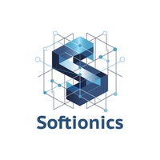

Dec 2025 — Present

Firmware Engineering Intern · Softionics
Multi-sensor firmware development
I am contributing to firmware for multi-sensor systems. My current project investigates ways to increase a board’s sampling rate while maintaining a reliable, synchronized acquisition path.